A guided tour of the C++17/CUDA inference pipeline — 14 steps
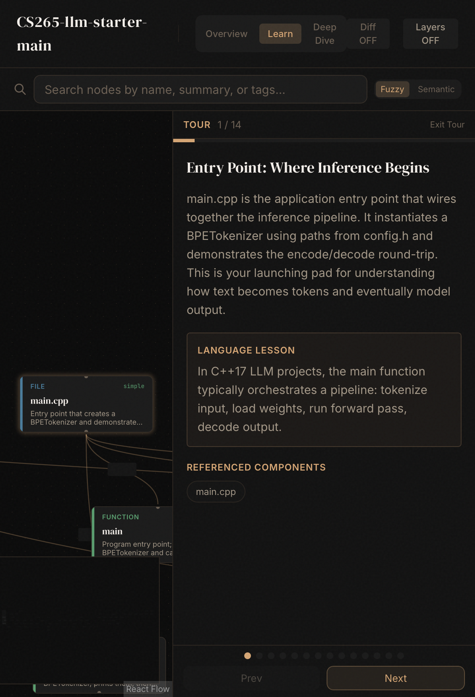
main.cpp is the application entry point that wires together the inference pipeline. It instantiates a BPETokenizer using paths from config.h and demonstrates the encode/decode round-trip. This is your launching pad for understanding how text becomes tokens and eventually model output.
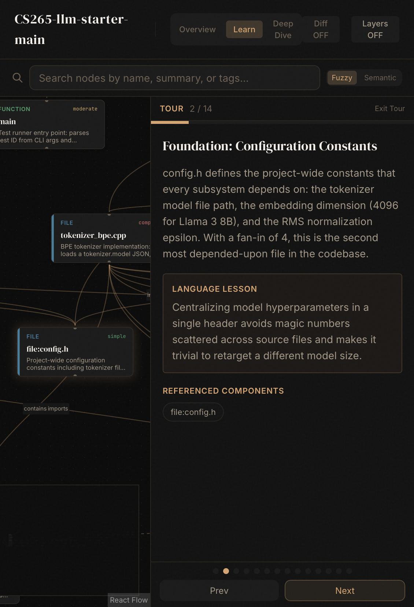
config.h defines the project-wide constants that every subsystem depends on: the tokenizer model file path, the embedding dimension (4096 for Llama 3 8B), and the RMS normalization epsilon. With a fan-in of 4, this is the second most depended-upon file in the codebase.
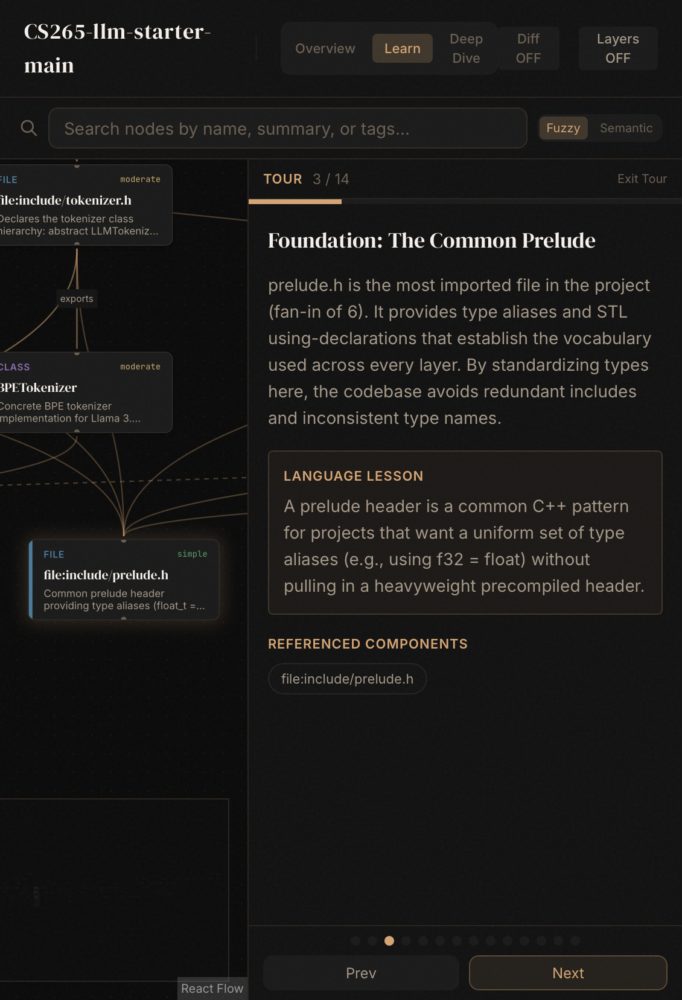
prelude.h is the most imported file in the project (fan-in of 6). It provides type aliases and STL using-declarations that establish the vocabulary used across every layer. By standardizing types here, the codebase avoids redundant includes and inconsistent type names.
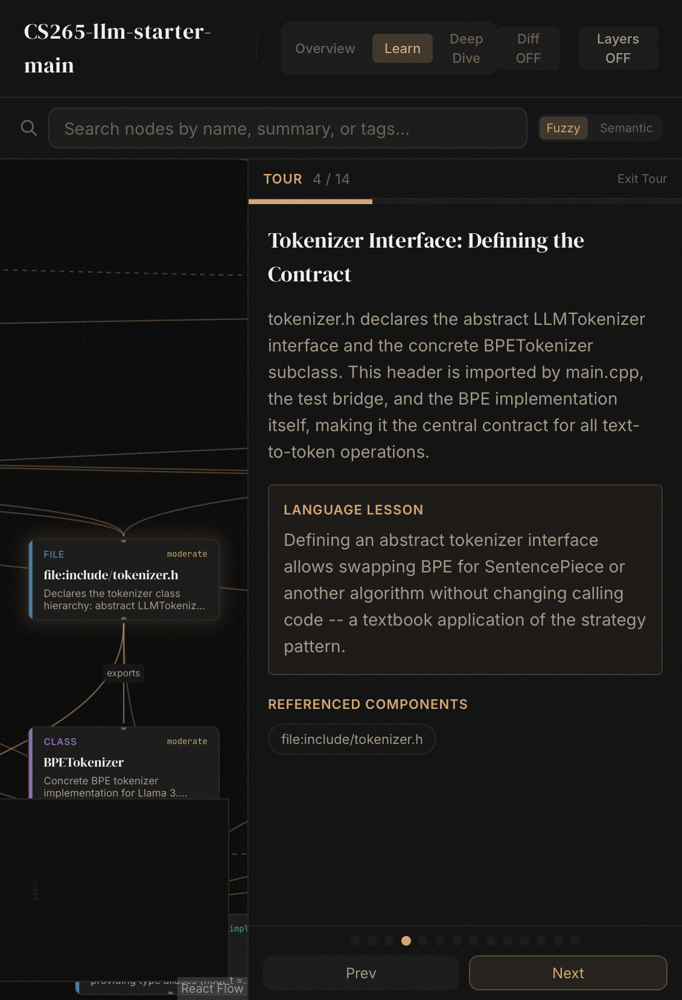
tokenizer.h declares the abstract LLMTokenizer interface and the concrete BPETokenizer subclass. This header is imported by main.cpp, the test bridge, and the BPE implementation itself, making it the central contract for all text-to-token operations.
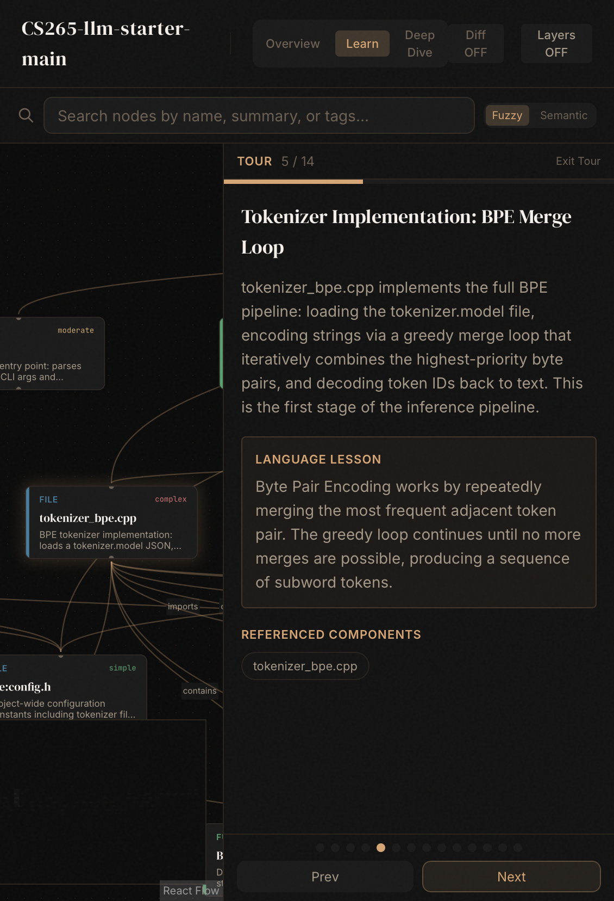
tokenizer_bpe.cpp implements the full BPE pipeline: loading the tokenizer.model file, encoding strings via a greedy merge loop that iteratively combines the highest-priority byte pairs, and decoding token IDs back to text. This is the first stage of the inference pipeline.
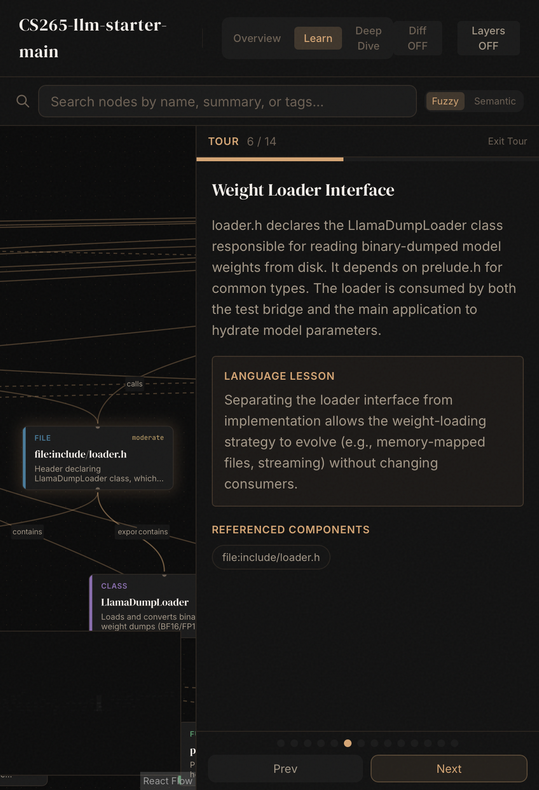
loader.h declares the LlamaDumpLoader class responsible for reading binary-dumped model weights from disk. It depends on prelude.h for common types. The loader is consumed by both the test bridge and the main application to hydrate model parameters.
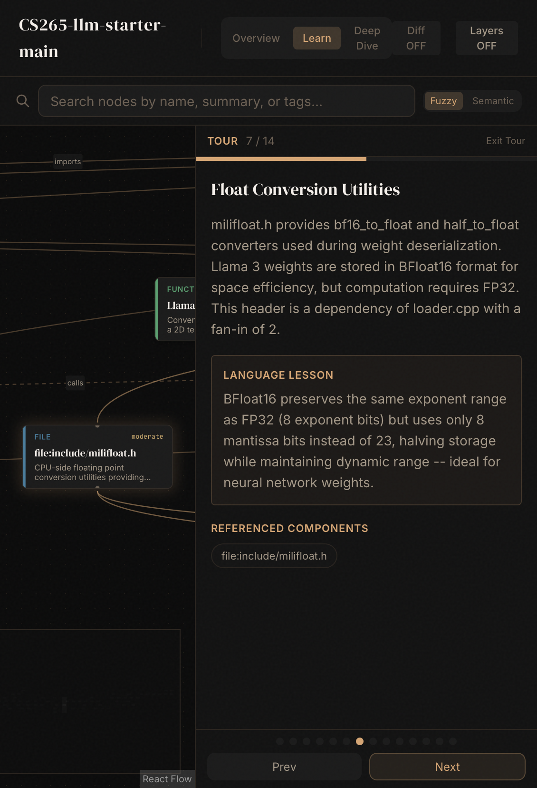
milifloat.h provides bf16_to_float and half_to_float converters used during weight deserialization. Llama 3 weights are stored in BFloat16 format for space efficiency, but computation requires FP32. This header is a dependency of loader.cpp with a fan-in of 2.
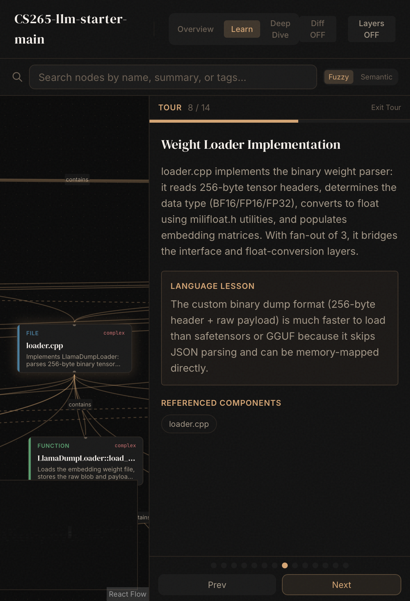
loader.cpp implements the binary weight parser: it reads 256-byte tensor headers, determines the data type (BF16/FP16/FP32), converts to float using milifloat.h utilities, and populates embedding matrices. With fan-out of 3, it bridges the interface and float-conversion layers.
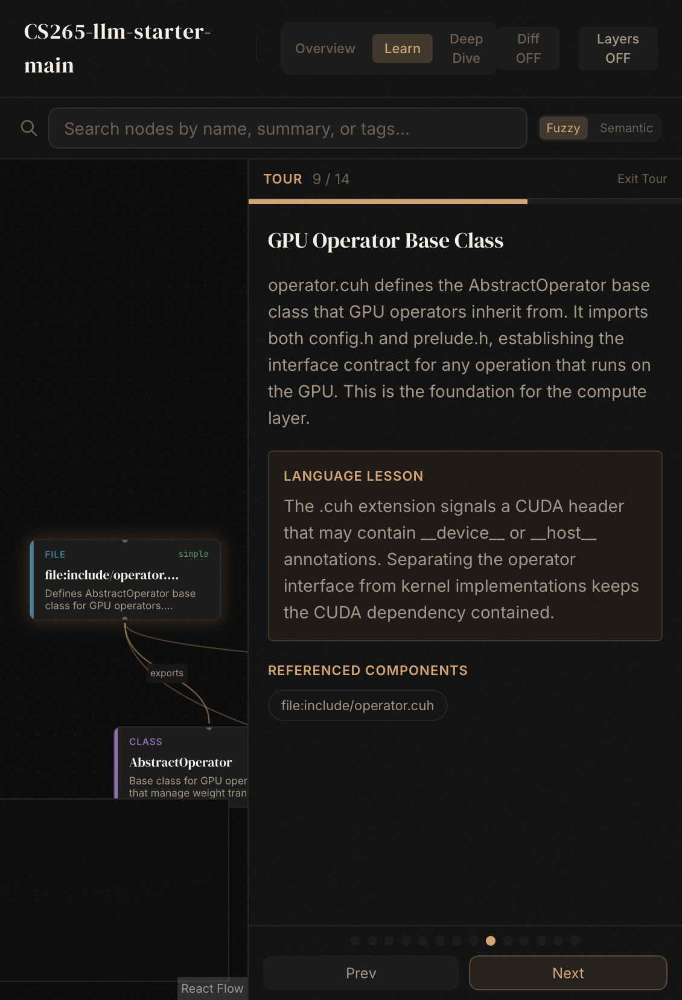
operator.cuh defines the AbstractOperator base class that GPU operators inherit from. It imports both config.h and prelude.h, establishing the interface contract for any operation that runs on the GPU. This is the foundation for the compute layer.
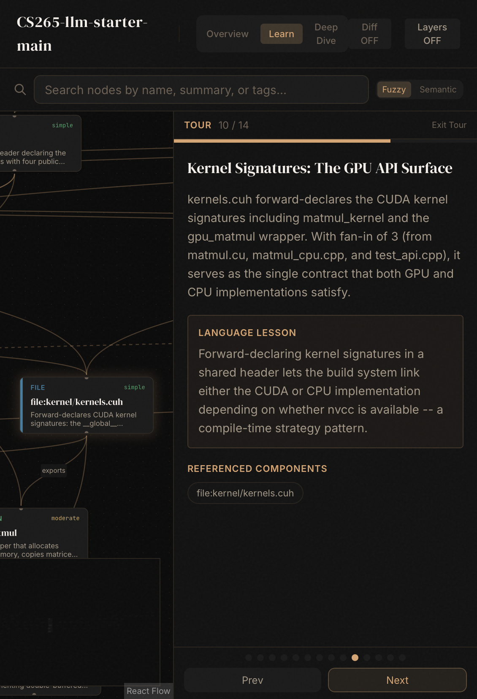
kernels.cuh forward-declares the CUDA kernel signatures including matmul_kernel and the gpu_matmul wrapper. With fan-in of 3 (from matmul.cu, matmul_cpu.cpp, and test_api.cpp), it serves as the single contract that both GPU and CPU implementations satisfy.
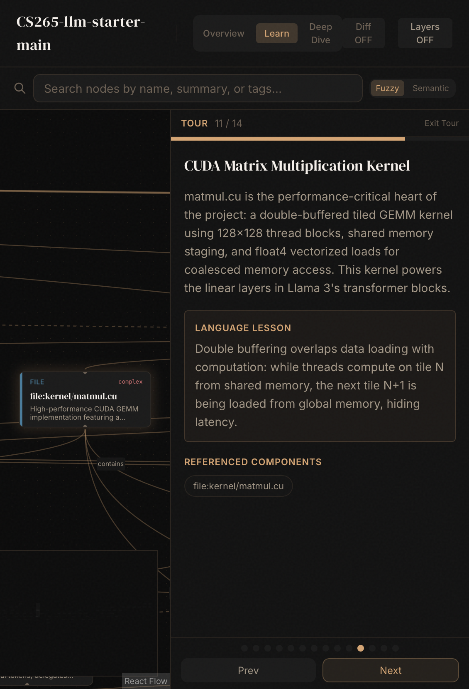
matmul.cu is the performance-critical heart of the project: a double-buffered tiled GEMM kernel using 128x128 thread blocks, shared memory staging, and float4 vectorized loads for coalesced memory access. This kernel powers the linear layers in Llama 3's transformer blocks.
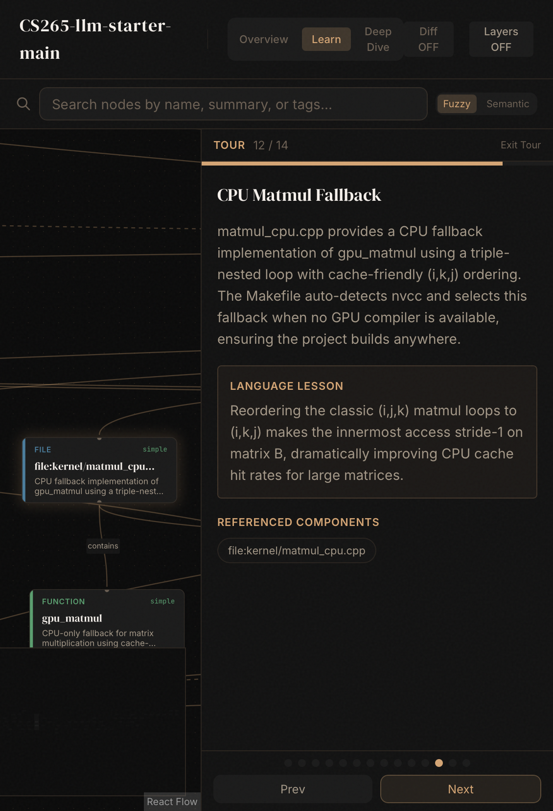
matmul_cpu.cpp provides a CPU fallback implementation of gpu_matmul using a triple-nested loop with cache-friendly (i,k,j) ordering. The Makefile auto-detects nvcc and selects this fallback when no GPU compiler is available, ensuring the project builds anywhere.
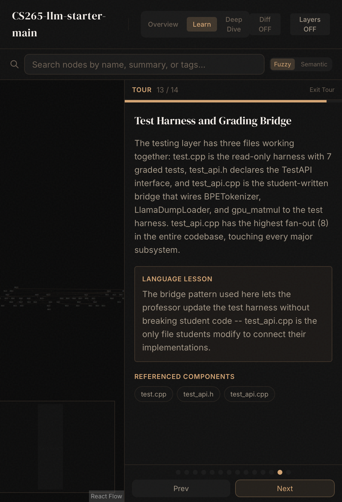
The testing layer has three files working together: test.cpp is the read-only harness with 7 graded tests, test_api.h declares the TestAPI interface, and test_api.cpp is the student-written bridge that wires BPETokenizer, LlamaDumpLoader, and gpu_matmul to the test harness. test_api.cpp has the highest fan-out (8) in the entire codebase, touching every major subsystem.
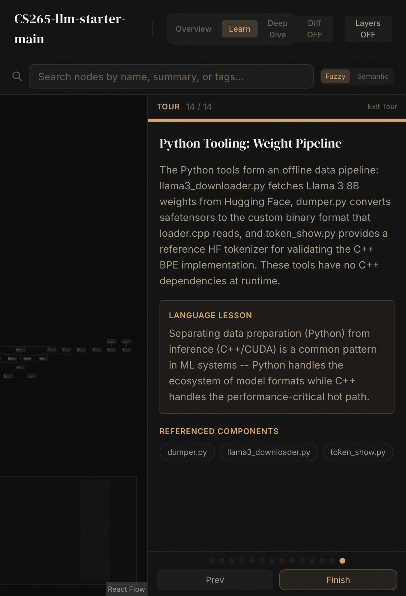
The Python tools form an offline data pipeline: llama3_downloader.py fetches Llama 3 8B weights from Hugging Face, dumper.py converts safetensors to the custom binary format that loader.cpp reads, and token_show.py provides a reference HF tokenizer for validating the C++ BPE implementation. These tools have no C++ dependencies at runtime.
Use ← → arrow keys to navigate